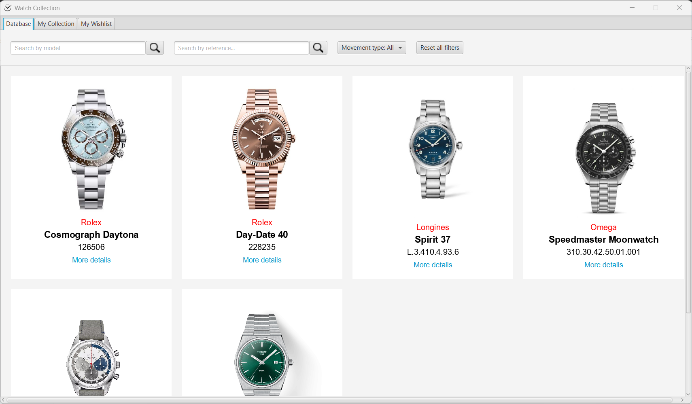
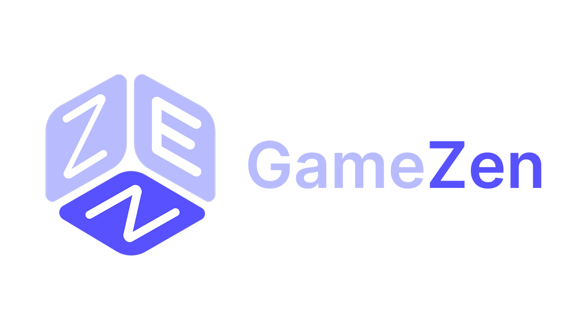

Projects
A selection of my software development projects


WatchCollection
Desktop AppAcademic Project
Ontology-based app for managing a watch collection
Java

GameZen
Mobile AppAcademic Project
Android app for an e-commerce of board games. Project for my High School Diploma
JavaAndroid